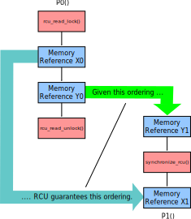
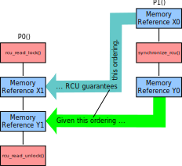
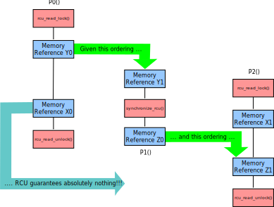
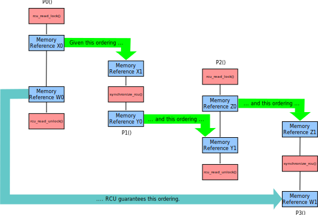

January 14, 2017
This article was contributed by Jade Alglave,
Paul E. McKenney, Alan Stern, Luc Maranget, and Andrea Parri
For the strong model, RCU's ordering rules may be summarized as follows:
- In the absence of an RCU grace period, read-side critical
sections provide no ordering guarantees whatsoever.
- In the absence of an RCU read-side critical section, grace
periods provide the same ordering guarantees as do full
memory barriers.
- If anything following a given RCU read-side critical section's
rcu_read_lock() precedes a given grace period, then
anything preceding that critical section's rcu_read_unlock()
also precedes anything following that grace period.
- If anything preceding a given RCU read-side critical section's
rcu_read_unlock() follows a given grace period, then
anything following that critical section's rcu_read_lock()
also follows anything preceding that grace period.
The first two guarantees are straightforward, but the last two could
use some illustration, which is provided in the following sections.
The following diagram illustrates the third RCU guarantee:

In the above diagram, we have an RCU read-side critical section
on P0() and an RCU grace period on P1().
Memory reference Y0 precedes memory reference Y1.
There are three straightforward ways to establish that Y0 precedes Y1:
(1) Y1 is a load that returns the value stored by Y0,
(2) Y0 is a load that returns the value from some store preceding
the store Y1, and
(3) Both Y0 and Y1 are stores, and Y1 overwrites eihter the value
written by Y0 or overwrites some later value.
In addition to these straightforward ways of establishing order,
there is an arbitrarily large number of more complex ways involving
additional threads, memory barriers, dependencies, etc.
Regardless of how ordering is established, given that Y0 follows
the rcu_read_lock() and precedes a grace period, we know
that everything preceding the rcu_read_unlock() precedes
anything following the grace period.
In this case, as shown in the figure, the resulting guarantee is
that X0 precedes X1.
The following diagram illustrates the fourth RCU guarantee:

Here we have memory reference Y1 preceding P0()'s
rcu_read_unlock() and also following memory reference Y0,
which in turn means that everything following the rcu_read_lock()
must follow anything preceding the RCU grace period.
In this case, this guarantees that X1 will follow X0.
Can the third and fourth guarantees be strung together?
Use cases for this sort of thing are rare, but not unheard of:
Use cases include some situations involving combinations of RCU and
reference counting.
The answer is “not always”, as illustrated by the following
diagram:

The third guarantee ensures that all accesses preceding P0()'s
rcu_read_unlock() will precede Z0, and the fourth guarantee
ensures that all accesses following P2()'s rcu_read_lock()
will follow Y1, but this is not sufficient to guarantee that X0 precedes X1
because the two critical sections can overlap during P1()'s grace
period.
But what happens if we add another grace period, as illustrated by the
following diagram?

Starting with CPUs 1 and 2, we see that the entirety of P2()'s
read-side critical section must follow memory reference X1.
Pulling in P0()'s critical section, we see that this entire
critical section must precede Y0.
As a consequence, some portion of P2()'s critical section occurs
after P0()'s rcu_read_lock().
Now pulling in P3()'s grace period, we see that both Z0 and X0 precede
the beginning of this new grace period, which means that all of both
critical sections must precede W1.
Therefore, because W0 precedes P0()'s rcu_read_unlock(), W0 must
precede W1, thus providing the ordering of interest.
In general, an RCU grace period paired with an RCU read-side critical section
provides ordering.
As a result, counterintuitive cyclic orderings are prohibited only in cases
where there are at least as many RCU grace periods as there are RCU read-side
critical sections, regardless of the order in which the grace periods and
critical sections occur.
However, the diagrams are getting large, so we will switch to C-code fragments.
The following fragment has three RCU grace periods and three RCU read-side
critical sections:
Litmus Test N
1 void P0(void) void P3(void)
2 { {
3 WRITE_ONCE(a, 1); rcu_read_lock();
4 synchronize_rcu(); r3 = READ_ONCE(d);
5 WRITE_ONCE(b, 1); WRITE_ONCE(e, 1);
6 } rcu_read_unlock();
7 }
8 void P1(void)
9 { void P4(void)
10 r1 = READ_ONCE(b); {
11 synchronize_rcu(); rcu_read_lock();
12 WRITE_ONCE(c, 1); r4 = READ_ONCE(e);
13 } WRITE_ONCE(f, 1);
14 rcu_read_unlock();
15 void P2(void) }
16 {
17 r2 = READ_ONCE(c); void P5(void)
18 synchronize_rcu(); {
19 WRITE_ONCE(d, 1); rcu_read_lock();
20 } r5 = READ_ONCE(f);
21 r6 = READ_ONCE(a);
22 rcu_read_unlock();
23 }
Can the result
(r1 && r2 && r3 && r4 && r5 && !r6)
occur?
Here the grace periods order the writes to a, b, c,
and d, and the three grace periods are themselves ordered.
Therefore, P3()'s write to e must be ordered after
P2()'s read from c and thus after the end of P1()'s
grace period.
This in turn means that P4()'s read from e is after the
end of P1()'s grace period, and thus that P4()'s write to
f must be ordered after P1()'s read from b,
that is to say, after the end of P0()'s grace period.
Again, this implies that P5()'s read from f follows the
end of P0()'s grace period, which means that P5()'s
read from a must follow P0()'s write, and thus that
the counterintuitive cyclic result cannot happen.
The tool agrees with this analysis, as can be seen by executing
the following command:
herd7 -conf strong.cfg C-ISA2-6+o-sync-o+o-sync-o+o-sync-o+rl-o-o-rul+rl-o-o-rul+rl-o-o-rul.litmus
This command's output is as follows:
Test C-ISA2-6+o-sync-o+o-sync-o+o-sync-o+rl-o-o-rul+rl-o-o-rul+rl-o-o-rul Allowed
States 63
1:r1=0; 2:r2=0; 3:r3=0; 4:r4=0; 5:r5=0; 5:r6=0;
1:r1=0; 2:r2=0; 3:r3=0; 4:r4=0; 5:r5=0; 5:r6=1;
1:r1=0; 2:r2=0; 3:r3=0; 4:r4=0; 5:r5=1; 5:r6=0;
1:r1=0; 2:r2=0; 3:r3=0; 4:r4=0; 5:r5=1; 5:r6=1;
1:r1=0; 2:r2=0; 3:r3=0; 4:r4=1; 5:r5=0; 5:r6=0;
1:r1=0; 2:r2=0; 3:r3=0; 4:r4=1; 5:r5=0; 5:r6=1;
1:r1=0; 2:r2=0; 3:r3=0; 4:r4=1; 5:r5=1; 5:r6=0;
1:r1=0; 2:r2=0; 3:r3=0; 4:r4=1; 5:r5=1; 5:r6=1;
1:r1=0; 2:r2=0; 3:r3=1; 4:r4=0; 5:r5=0; 5:r6=0;
1:r1=0; 2:r2=0; 3:r3=1; 4:r4=0; 5:r5=0; 5:r6=1;
1:r1=0; 2:r2=0; 3:r3=1; 4:r4=0; 5:r5=1; 5:r6=0;
1:r1=0; 2:r2=0; 3:r3=1; 4:r4=0; 5:r5=1; 5:r6=1;
1:r1=0; 2:r2=0; 3:r3=1; 4:r4=1; 5:r5=0; 5:r6=0;
1:r1=0; 2:r2=0; 3:r3=1; 4:r4=1; 5:r5=0; 5:r6=1;
1:r1=0; 2:r2=0; 3:r3=1; 4:r4=1; 5:r5=1; 5:r6=0;
1:r1=0; 2:r2=0; 3:r3=1; 4:r4=1; 5:r5=1; 5:r6=1;
1:r1=0; 2:r2=1; 3:r3=0; 4:r4=0; 5:r5=0; 5:r6=0;
1:r1=0; 2:r2=1; 3:r3=0; 4:r4=0; 5:r5=0; 5:r6=1;
1:r1=0; 2:r2=1; 3:r3=0; 4:r4=0; 5:r5=1; 5:r6=0;
1:r1=0; 2:r2=1; 3:r3=0; 4:r4=0; 5:r5=1; 5:r6=1;
1:r1=0; 2:r2=1; 3:r3=0; 4:r4=1; 5:r5=0; 5:r6=0;
1:r1=0; 2:r2=1; 3:r3=0; 4:r4=1; 5:r5=0; 5:r6=1;
1:r1=0; 2:r2=1; 3:r3=0; 4:r4=1; 5:r5=1; 5:r6=0;
1:r1=0; 2:r2=1; 3:r3=0; 4:r4=1; 5:r5=1; 5:r6=1;
1:r1=0; 2:r2=1; 3:r3=1; 4:r4=0; 5:r5=0; 5:r6=0;
1:r1=0; 2:r2=1; 3:r3=1; 4:r4=0; 5:r5=0; 5:r6=1;
1:r1=0; 2:r2=1; 3:r3=1; 4:r4=0; 5:r5=1; 5:r6=0;
1:r1=0; 2:r2=1; 3:r3=1; 4:r4=0; 5:r5=1; 5:r6=1;
1:r1=0; 2:r2=1; 3:r3=1; 4:r4=1; 5:r5=0; 5:r6=0;
1:r1=0; 2:r2=1; 3:r3=1; 4:r4=1; 5:r5=0; 5:r6=1;
1:r1=0; 2:r2=1; 3:r3=1; 4:r4=1; 5:r5=1; 5:r6=0;
1:r1=0; 2:r2=1; 3:r3=1; 4:r4=1; 5:r5=1; 5:r6=1;
1:r1=1; 2:r2=0; 3:r3=0; 4:r4=0; 5:r5=0; 5:r6=0;
1:r1=1; 2:r2=0; 3:r3=0; 4:r4=0; 5:r5=0; 5:r6=1;
1:r1=1; 2:r2=0; 3:r3=0; 4:r4=0; 5:r5=1; 5:r6=0;
1:r1=1; 2:r2=0; 3:r3=0; 4:r4=0; 5:r5=1; 5:r6=1;
1:r1=1; 2:r2=0; 3:r3=0; 4:r4=1; 5:r5=0; 5:r6=0;
1:r1=1; 2:r2=0; 3:r3=0; 4:r4=1; 5:r5=0; 5:r6=1;
1:r1=1; 2:r2=0; 3:r3=0; 4:r4=1; 5:r5=1; 5:r6=0;
1:r1=1; 2:r2=0; 3:r3=0; 4:r4=1; 5:r5=1; 5:r6=1;
1:r1=1; 2:r2=0; 3:r3=1; 4:r4=0; 5:r5=0; 5:r6=0;
1:r1=1; 2:r2=0; 3:r3=1; 4:r4=0; 5:r5=0; 5:r6=1;
1:r1=1; 2:r2=0; 3:r3=1; 4:r4=0; 5:r5=1; 5:r6=0;
1:r1=1; 2:r2=0; 3:r3=1; 4:r4=0; 5:r5=1; 5:r6=1;
1:r1=1; 2:r2=0; 3:r3=1; 4:r4=1; 5:r5=0; 5:r6=0;
1:r1=1; 2:r2=0; 3:r3=1; 4:r4=1; 5:r5=0; 5:r6=1;
1:r1=1; 2:r2=0; 3:r3=1; 4:r4=1; 5:r5=1; 5:r6=0;
1:r1=1; 2:r2=0; 3:r3=1; 4:r4=1; 5:r5=1; 5:r6=1;
1:r1=1; 2:r2=1; 3:r3=0; 4:r4=0; 5:r5=0; 5:r6=0;
1:r1=1; 2:r2=1; 3:r3=0; 4:r4=0; 5:r5=0; 5:r6=1;
1:r1=1; 2:r2=1; 3:r3=0; 4:r4=0; 5:r5=1; 5:r6=0;
1:r1=1; 2:r2=1; 3:r3=0; 4:r4=0; 5:r5=1; 5:r6=1;
1:r1=1; 2:r2=1; 3:r3=0; 4:r4=1; 5:r5=0; 5:r6=0;
1:r1=1; 2:r2=1; 3:r3=0; 4:r4=1; 5:r5=0; 5:r6=1;
1:r1=1; 2:r2=1; 3:r3=0; 4:r4=1; 5:r5=1; 5:r6=0;
1:r1=1; 2:r2=1; 3:r3=0; 4:r4=1; 5:r5=1; 5:r6=1;
1:r1=1; 2:r2=1; 3:r3=1; 4:r4=0; 5:r5=0; 5:r6=0;
1:r1=1; 2:r2=1; 3:r3=1; 4:r4=0; 5:r5=0; 5:r6=1;
1:r1=1; 2:r2=1; 3:r3=1; 4:r4=0; 5:r5=1; 5:r6=0;
1:r1=1; 2:r2=1; 3:r3=1; 4:r4=0; 5:r5=1; 5:r6=1;
1:r1=1; 2:r2=1; 3:r3=1; 4:r4=1; 5:r5=0; 5:r6=0;
1:r1=1; 2:r2=1; 3:r3=1; 4:r4=1; 5:r5=0; 5:r6=1;
1:r1=1; 2:r2=1; 3:r3=1; 4:r4=1; 5:r5=1; 5:r6=1;
No
Witnesses
Positive: 0 Negative: 63
Condition exists (1:r1=1 /\ 2:r2=1 /\ 3:r3=1 /\ 4:r4=1 /\ 5:r5=1 /\ 5:r6=0)
Observation C-ISA2-6+o-sync-o+o-sync-o+o-sync-o+rl-o-o-rul+rl-o-o-rul+rl-o-o-rul Never 0 63
Hash=b2da0ec67e3503cb11493c4e73ea9b4a
It is important to note that RCU grace periods and read-side critical
sections can interact indirectly, as those of P1() and
P4() did, and that the RCU guarantees apply even for these
indirect interactions.